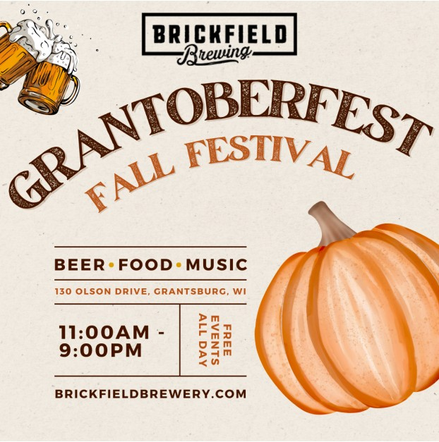
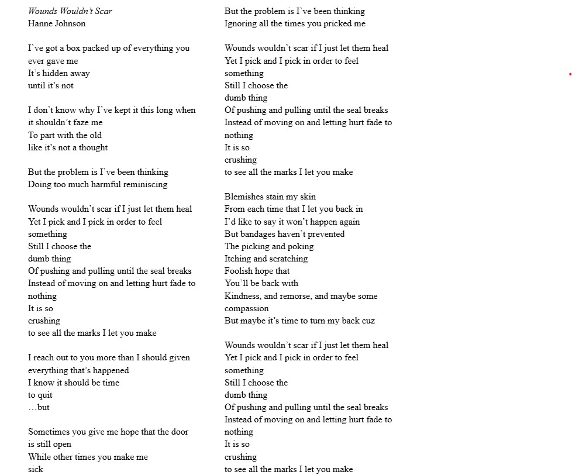

About
Hi, my name is Hanne Johnson and I love to create. I would like to work as an advertising copywriter or for a company looking for creative ad campaigns. I’m a student at the University of Wisconsin-Eau Claire, pursuing a degree in Integrated Strategic Communications with an emphasis on advertising. Additionally, I am completing classes to fulfill a minor in Multimedia Communications and a certificate in Creative Writing. Through the classes that I have been taking on the path to earning my degree, I have worked on advertising campaigns, written poems, planned and saw through photoshoots, written pieces of fiction, and utilized my creative side in a myriad of other ways.
I am a collegiate student-athlete, participating on the UW-Eau Claire women’s volleyball team. On campus, I am also a member of the Honors program and I am a Campus Ambassador. Between these activities and my job coaching a youth volleyball team for a local volleyball club, I stay busy. However, I still make a comittment to my classes, as I have maintained a 4.0 throughout my schooling. I have been on the Dean’s list each semester, and I plan to keep working hard to continue this trend.
In my spare time, I play guitar, piano, and sing. I like to write my own music, experimenting with different sounds and instruments and lyrics and people that I can collaborate with. I love theater and have been involved in any productions. I am also a very competitive person so any competition or sport tends to be right up my alley.
Gallery
 For further inquiries, feel free to contact me in the following spaces:
email: hanneej11@gmail.com
phone: 715-338-5630
instagram: @hannejohnson16